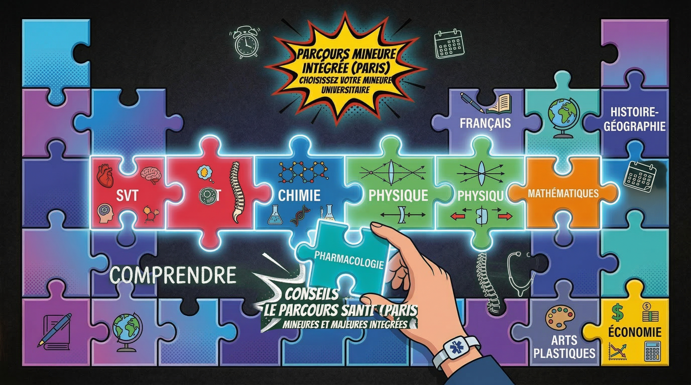

Parcoursup 2026 : les dates clés à retenir

Tu vises des études de médecine via PASS ou LAS ? Alors Parcoursup est un passage obligé, et chaque échéance compte. Rater une date, c'est risquer de compromettre toute une année de travail. On t'a préparé un calendrier complet avec toutes les étapes clés de Parcoursup 2026, accompagné de nos conseils pratiques pour les futurs étudiants en santé.
Que tu sois en Terminale ou en reconversion, ce guide va t'aider à y voir plus clair et à t'organiser. Garde cette page dans tes favoris, tu nous remercieras plus tard.
1. Décembre 2025 – Janvier 2026 : Découverte et recherche des formations
C'est le tout début de l'aventure Parcoursup. La plateforme ouvre ses portes en mode consultation dès le mois de décembre. À ce stade, tu ne peux pas encore t'inscrire ni formuler de vœux, mais tu peux (et tu dois) commencer à explorer les formations disponibles.
Ce que tu dois faire pendant cette phase
- Explorer le catalogue des formations : Parcoursup répertorie des milliers de formations. Filtre par domaine (santé), par région ou par type de parcours (PASS, LAS) pour identifier les universités qui t'intéressent.
- Lire attentivement les fiches formation : chaque fiche détaille les attendus nationaux et locaux, les critères d'examen des dossiers, les taux de réussite et les débouchés. C'est une mine d'or d'informations.
- Compare les facultés entre elles : toutes les facs ne se valent pas en termes de taux de passage en deuxième année, de nombre de places (numerus apertus) ou de qualité du tutorat. Prends le temps de comparer.
- Participer aux journées portes ouvertes : beaucoup d'universités organisent leurs JPO entre décembre et février. C'est l'occasion idéale de découvrir les locaux, rencontrer des étudiants et poser tes questions.
- Échange aussi avec des étudiants en PASS/LAS : rien ne remplace le témoignage de quelqu'un qui est passé par là. Contacte des associations étudiantes ou des tuteurs.
Ne te limite pas à une seule fac. Explore au moins 4 à 5 universités différentes pour avoir une vision claire de tes options. Notre Quizz x Fac peut t'aider à identifier celles qui correspondent le mieux à ton profil.
2. Janvier – Mars 2026 : Inscription et formulation des vœux
C'est la phase la plus stratégique de tout le processus. À partir de mi-janvier, la plateforme Parcoursup ouvre officiellement les inscriptions. Tu peux alors créer ton dossier et commencer à formuler tes vœux. Tu disposes généralement de plusieurs semaines, jusqu'à mi-mars, pour finaliser ta liste.
Les étapes à ne pas manquer
- Créer ton dossier Parcoursup : munis-toi de ton INE (Identifiant National Étudiant), d'une adresse e-mail valide et de ton relevé de notes. Remplis soigneusement chaque rubrique de ton profil.
- Formuler tes vœux (10 maximum) : tu peux formuler jusqu'à 10 vœux et 20 sous-vœux. Pour les études de santé, pense à mixer PASS et LAS dans différentes universités pour te donner le plus d'options possibles.
- Rédige ton projet de formation motivé : c'est l'équivalent de la lettre de motivation. Pour chaque vœu, tu dois expliquer pourquoi tu souhaites intégrer cette formation. Sois sincère, précis et montre ta motivation pour les études de santé.
- Compléter la rubrique Activités et centres d'intérêt : stages, bénévolat, engagements associatifs, sport… Tout ce qui montre ta curiosité et ta capacité d'engagement compte.
Pour tes vœux en PASS, pense bien à choisir ta mineure (option disciplinaire). Elle déterminera ta licence de rebond en cas d'échec au concours. Choisis une matière qui te plaît vraiment et dans laquelle tu es à l'aise.
Stratégie de vœux pour les études de santé
Voici une stratégie que l'on recommande souvent aux futurs étudiants en médecine :
- 2 à 3 vœux PASS dans des universités différentes (dont au moins une dans ton académie pour le bonus local)
- 2 à 3 vœux LAS dans des licences qui t'intéressent réellement, car elles constituent aussi un plan B solide
- 2 à 3 vœux complémentaires dans d'autres formations qui te plaisent (sciences, écoles paramédicales, etc.)
Tu peux utiliser notre Simulateur Parcoursup pour estimer tes chances d'admission dans chaque formation et affiner ta stratégie.
3. Mars – Avril 2026 : Confirmation des vœux et finalisation des dossiers
Une fois la période de formulation des vœux terminée (généralement fin mars), tu entres dans une phase cruciale : la confirmation. Tu ne peux plus ajouter de nouveaux vœux, mais tu as encore quelques semaines pour peaufiner ton dossier.
Ce qu'il faut absolument faire
- Confirmer chaque vœu individuellement : un vœu non confirmé est automatiquement supprimé. Ne laisse rien au hasard, vérifie chacun de tes vœux un par un.
- Finalise tes lettres de motivation : relis, corrige, fais relire par un proche ou un professeur. La qualité de ton projet de formation motivé peut faire la différence, surtout pour les formations sélectives.
- Vérifier tes pièces justificatives : bulletins scolaires, relevés de notes, attestations diverses… Assure-toi que tout est bien téléchargé et lisible sur la plateforme.
- Échange avec tes professeurs sur la fiche Avenir : tes enseignants et ton professeur principal remplissent la fiche Avenir. Parle-leur de ton projet en amont pour qu'ils sachent comment te présenter.
La date limite de confirmation est impitoyable. Confirme tes vœux au moins 48 heures avant la deadline pour éviter tout problème technique de dernière minute. Les serveurs Parcoursup sont souvent surchargés les derniers jours.
Les notes du deuxième trimestre comptent
Attention, tes notes du deuxième trimestre de Terminale seront intégrées à ton dossier Parcoursup. C'est le moment de maintenir (voire d'améliorer) tes résultats scolaires. Les facultés de médecine sont particulièrement attentives aux notes scientifiques : mathématiques, physique-chimie, SVT et NSI le cas échéant.
4. Juin 2026 : Phase d'admission principale
C'est le grand jour (ou plutôt la grande période). À partir de début juin, tu commences à recevoir les réponses des formations. C'est une phase intense sur le plan émotionnel, mais aussi stratégique.
Les différents types de réponses
- Oui : tu es accepté ! Tu as quelques jours pour accepter ou refuser la proposition.
- Oui, si : tu es accepté sous condition de suivre un parcours d'accompagnement spécifique (courant en PASS/LAS). Ce n'est pas une mauvaise nouvelle, accepte sereinement.
- En attente : tu es sur liste d'attente. Ton rang dans la file et le nombre de places disponibles te donnent une idée de tes chances. Les listes bougent énormément les premières semaines.
- Non : tu n'es pas retenu (uniquement pour les formations sélectives hors PASS/LAS classiques).
Comment gérer les réponses
- Réponds dans les délais : tu disposes de quelques jours pour accepter ou refuser une proposition. Passé ce délai, ta place est perdue.
- Garde tes vœux en attente : si tu acceptes une proposition mais que tu es en attente pour un vœu que tu préfères, tu peux conserver ce vœu en attente. Pas besoin de renoncer tout de suite.
- Suis l'évolution des listes d'attente : consulte régulièrement ta position dans la file. De nombreuses places se libèrent entre juin et juillet au fur et à mesure des désistements.
Si tu es en liste d'attente pour un PASS ou un LAS, garde confiance. Les listes bougent énormément, surtout après les résultats du bac. Des centaines de places se libèrent chaque année.
5. Juin – Septembre 2026 : Phase complémentaire
La phase complémentaire s'ouvre en parallèle de la phase principale, généralement à partir de mi-juin. Elle permet aux candidats qui n'ont reçu aucune proposition (ou qui souhaitent formuler de nouveaux vœux) de postuler sur les places encore disponibles.
Qui est concerné ?
- Les candidats sans aucune proposition d'admission
- Les candidats qui souhaitent formuler de nouveaux vœux dans des formations ayant encore des places
- Les candidats en réorientation ou les étudiants en reprise d'études
Nos conseils pour la phase complémentaire
- Sois réactif : les places partent vite. Consulte régulièrement les formations disponibles et postule dès que tu repères une opportunité.
- Élargis tes horizons : si tes vœux initiaux en PASS n'ont pas abouti, envisage un LAS dans une licence qui te plaît. C'est une voie tout aussi valable pour accéder aux études de médecine.
- Contacte la CAES : la Commission d'Accès à l'Enseignement Supérieur de ton académie peut t'accompagner et te proposer des solutions si tu es sans affectation.
- Chaque année, des milliers d'étudiants trouvent leur formation pendant la phase complémentaire. Ce n'est pas un échec, c'est simplement un chemin différent.
6. Juillet – Septembre 2026 : Inscription administrative
Tu as accepté une proposition et le stress de Parcoursup est derrière toi ? Il reste une dernière étape : l'inscription administrative auprès de ton université. Ne la néglige surtout pas, car sans elle, tu ne seras pas officiellement étudiant.
Ce que tu dois préparer
- Tes documents d'identité : carte d'identité ou passeport en cours de validité
- Ton relevé de notes du bac : indispensable pour finaliser ton inscription
- Une photo d'identité pour ta carte étudiant
- Ton attestation de sécurité sociale : ou ton numéro de sécurité sociale pour l'affiliation à la CPAM
- Un justificatif de domicile pour les démarches administratives
- Le règlement des frais d'inscription : prévois le montant (environ 170 euros pour une licence) et renseigne-toi sur les bourses et exonérations possibles
Inscris-toi le plus tôt possible. Les inscriptions administratives ouvrent dès juillet dans la plupart des universités. Plus tôt tu t'inscris, plus tôt tu reçois tes identifiants ENT, tes accès à la bibliothèque en ligne et aux supports de cours. C'est un vrai avantage pour prendre de l'avance sur la rentrée.
Préparer sa rentrée en PASS/LAS
Une fois ton inscription validée, tu peux commencer à préparer ta rentrée sereinement :
- Rejoins les groupes étudiants : Discord, groupes Facebook, associations de tutorat… Intègre les communautés de ta fac pour obtenir des conseils et du soutien.
- Renseigne-toi sur le tutorat : la plupart des facs proposent un tutorat organisé par les étudiants de deuxième année. C'est gratuit et très utile.
- Organise ton logement : si tu quittes le domicile familial, commence tes recherches le plus tôt possible (CROUS, logements privés, colocation).
- Commence à réfléchir à ton organisation de travail et à tes techniques de mémorisation. L'année de PASS est longue et intense, mieux vaut ne pas improviser.
Récapitulatif du calendrier Parcoursup 2026
Voici les grandes échéances à garder en tête :
- Décembre 2025 : ouverture de la plateforme en consultation
- Mi-janvier 2026 : ouverture des inscriptions et début de la formulation des vœux
- Mi-mars 2026 : date limite pour formuler tes vœux
- Début avril 2026 : date limite pour confirmer tes vœux et finaliser ton dossier
- Début juin 2026 : début de la phase d'admission principale
- Mi-juin 2026 : ouverture de la phase complémentaire
- Juillet 2026 : résultats du bac et accélération des listes d'attente
- Juillet – Septembre 2026 : inscriptions administratives
- Mi-septembre 2026 : fin de la phase complémentaire et clôture de Parcoursup
Reste organisé, note chaque échéance dans ton agenda, et si tu as besoin d'un coup de main, l'équipe AFEM est là pour t'accompagner à chaque étape de ton parcours vers les études de santé.